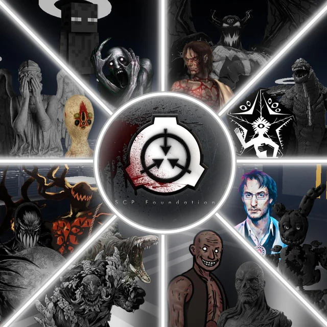

History
SCP Foundation History
The SCP Foundation is a fictional organization featuring in stories created by the SCP Wiki, a wiki-based collaborative writing project. Within the project's shared fictional universe, the SCP Foundation is a secret organization that is responsible for capturing, containing, and studying various paranormal, supernatural, and other mysterious phenomena (known as "anomalies" or "SCPs"), while also keeping their existence hidden from the rest of society. The collaborative writing project includes elements of many genres such as horror, science fiction, and urban fantasy. The majority of works on the SCP Wiki consists of thousands of SCP files: mock confidential scientific reports that document various SCPs and associated containment procedures. The website also contains "Foundation Tales", short stories featuring various characters and settings in the SCP universe. The wiki's literary works have been praised for their ability to convey horror through a quasi-scientific and academic writing style, as well as for their high standards of quality. The SCP universe has inspired numerous fan-made adaptations in varying forms of media, including literature, music, short films, and video games.
